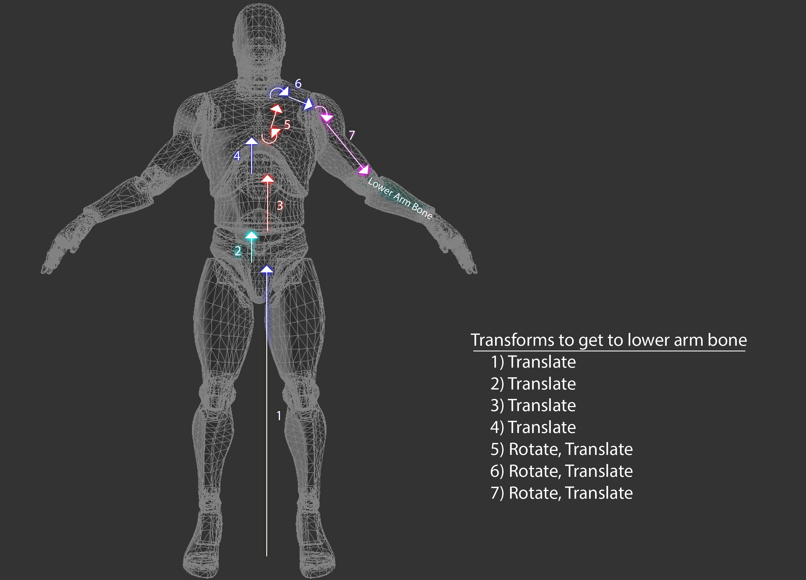
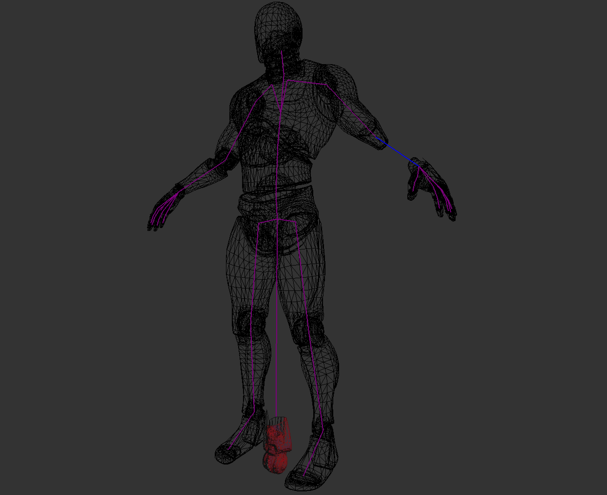
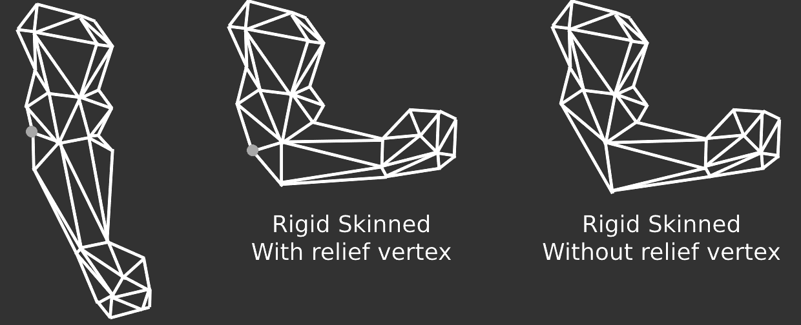

Skin Space & Rigid Skinning
When a mesh is skinned, each vertex is deformed by one or more bones. If each vertex is deformed by only one bone, the mesh is rigid skinned. If each vertex is deformed by one or more bones, the mesh is smooth skinned. We will explore rigid skinning here, smooth skinning will be covered later. When a rigid skinned model is created, the artist assigns each vertex to a bone. The easiest way to represent this in code is to add a bone index to the vertex structure.
struct Vertex {
vec3 position;
vec3 normal;
vec2 uv;
int joint;
}
The joint is an index into the transform array inside the Pose class. In the image below, i've colored the forearm bone blue and every vertex that belongs to the bone red.
Each bone describes one transformation that the highlighted part of the mesh must take to reach its desired position. The following image shows all the steps that the fore-arm mesh would have to take to be transformed from the origin of the world to its desired position and highlights the transformation that each bone will apply to the mesh.
To deform these vertices along with the bone, we need to introduce a new space to the vertex transform pipeline, Skin Space. Skin space is a confusing topic, it's covered more in depth in the book than here. The idea of skin space is to move all vertices in a way that if they are multiplied by the rest pose matrix of the bone they belong to, the vertices end up back in bind pose.
The image below shows the fore-arm mesh only in skin space. The rest of the mesh remains untouched. Each bone describes one transformation the vertices must make to end up in their desired position.
How is this skin space useful? Multiplying a skin space vertex by the bind pose of the bone it belongs to puts the vertex back into it's bind pose, but multiplying it by an animated pose will deform the vertex to match that animation.
So, how can we put a vertex into skin space? For that, let's consider the desired order of operation. If you multiply a vertex by the bind pose, the vertex should appear in it's bind pose. We know what the bind pose of the vertex is, we can multiply that by the inverse bind pose of the joint it belongs to.
Here, we introduce two new matrices to the aniamtion pipeline. The Inverse Bind Pose matrix, and the Animated Pose matrix. The inverse bind pose matrix maps a vertex from model space into skin space. The animated pose matrix maps the vertex from skin space back into model space, except the vertex is now deformed around the bone it belongs to. The updated pipeline looks like this:
- A mesh is created. Vertices are in model space
- Each vertex is multiplied by the inverse bind pose matrix. This puts the vertices into skin space.
- Each vertex is multiplied by the animated pose matrix. This puts the vertices back into model space, but the vertices are deformed around the skeleton.
- Each vertex is multiplied by the "model" matrix. This puts the vertices into world space
- Each vertex is multiplied by the view matrix. This puts the vertices into camera space
- Each vertex is multiplied by the projection matrix. This puts the vertices into NDC space.
In code, skinning a mesh looks like this:
void SkinMesh(Mesh& target, const Mesh& source, const Pose& bindPose, const Pose& animPose) {
for (int i = 0; i < source.vertices.size(); ++i) {
vec4 position = vec4(soure.vertices[i].position, 1.0f);
vec4 normal = vec4(soure.vertices[i].normal, 0.0f);
int joint = source.vertices[i].joint;
if (joint >= 0) {
mat4 invBindPose = toMat4(bindPose.GetGlobalTransform(joint));
invBindPose = inverse(invBindPose);
mat4 animatedPose = toMat4(animPose.GetGlobalTransform(joint));
// Move vertex into skin space
position = invBindPose * position;
normal = invBindPose * normal;
// Move vertex back into model space, but animated
position = animatedPose * position;
normal = aniamtedPose * normal;
}
target.vertices[i].position = vec3(position);
target.vertices[i].normal = normalized(vec3(normal));
}
}
You can combine the inverse bind pose and animated pose matrices into one skin matrix, then only multiply the vectors by the skin matrix, like so:
....
mat4 invBindPose = toMat4(bindPose.GetGlobalTransform(joint));
invBindPose = inverse(invBindPose);
mat4 animatedPose = toMat4(animPose.GetGlobalTransform(joint));
mat4 skin = animatedPose * invBindPose;
position = invBindPose * skin;
normal = invBindPose * skin;
....
This skinning calcualtion can be done on the CPU or the GPU. The most common method for skinning meshes is matrix palette skinning. Both CPU and GPU skinning are covered in the book.Rigid skinning is easy to implement, but it doesn't look great. There can be visual breaks in the mesh, and artists need to add relief vertices. The image below shows how relief vertices work
Visualizing skin space doesn't make a lot of sense, all of the triangles in a mesh tend to collapse close to origin (0, 0, 0) with some of the larger shapes still making sense. Generally if you see the skin space blob it means an error in the transformation pipeline. For the sake of completeness, the above model looks like this when in skin space:
Modern aniamtion system don't typically use rigid skinning, instead they use smooth skinning, which will be covered next.